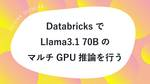

CCCMKホールディングス TECH LABの Tech Blog
https://techblog.cccmkhd.co.jp/
TECH LABのエンジニアが技術情報を発信しています
フィード
llama.cpp各種モデル18パターンの速度比較（Llama 3.1/Gemma 2/Phi-3…, GPU/x86_64/arm64）※おすすめモデル有り
CCCMKホールディングス TECH LABの Tech Blog
はじめに こんにちは。テックラボの高橋です。 本記事ではllama.cppで実行可能なモデルを片っ端から実行して良さげなモデルを探していきます。 なお、llama.cppの詳細やパラメータ設定については以下の記事をご参照ください。 techblog.cccmkhd.co.jp モデルは主に日本語対応モデルのリーダーボードである Nejumi-LLM-3からチョイスしていきます。 wandb.ai 各パラメータ毎にコマンド一発しか確認していないので、詳細な性能を知りたい方は各々の環境で試していただくか、下記リンク先のベンチマークやllama.cppのissueを参考にしてください。 openbe…
1日前
Fine-TuningしたHugging FaceのLLMをllama.cppでGGUFファイルに変換する手順についてまとめてみます。
CCCMKホールディングス TECH LABの Tech Blog
こんにちは、CCCMKホールディングスTECH LAB三浦です。 先日花火を久しぶりに見ました。遠くから眺めるだけだったのですが、色々な色や形の花火が見られました。花火の形も時代とともに変わっていくのだなぁとしみじみしました。 さて、以前オープンソースのLLMを少ないリソース環境下でも推論用途で使用可能にするOllamaというツールを使ってエッジコンピュータの"Jetson AGX ORIN"でLLMやVision Language Model(VLM)を動かした話をまとめました。 techblog.cccmkhd.co.jp OllamaではGGUFというフォーマットで出力されたモデルをロー…
4日前

DatabricksでLlama3.1 70BのマルチGPU推論を行う
CCCMKホールディングス TECH LABの Tech Blog
はじめに こんにちは。テックラボの高橋です。 本記事ではDatabricks上でLlama3.1のマルチGPU推論ができるかどうか試していきます。 8Bのモデルだと16G 1枚で実行できてしまうので、あえて70Bのモデルに挑戦してみます。 ※モデル毎の速度比較については下記リンク先をご参照ください。 techblog.cccmkhd.co.jp 環境 Databricks runtime 15.3 ML GPU T4 16G x 4 llama.cppのインストール 今回はモデルの量子化を活用した推論高速化ツールであるllama.cppを用います。 Databricksにllama.cppをイ…
8日前
コンテンツに対する反応を生成するLarge Content And Behavior Models(LCBMs)というモデルについて調べてみました。
CCCMKホールディングス TECH LABの Tech Blog
こんにちは、CCCMKホールディングスTECH LAB三浦です。 「これがなかった時ってどうやって生活していたんだろう」と思うことがあります。先日初めて行った場所でスマートフォンを使って地図を見たり交通機関の時間を調べたりしていたのですが、スマートフォンがなかった時ってどうしてたんだろう、と思いました。「これがなかった時ってどうしてたんだろう」と思わせる技術が、"革新的な技術"なのかもしれません。 さて、最近読んだ論文で特に面白いなと思ったテクニックがあります。それはYoutubeやSNSなどのコンテンツ(Content)とそれを閲覧したり受け取った人たちの反応(Behavior)をLLMを通…
10日前

GGUFファイルで保存されたLLMをOllamaで読み込んで使う方法を調べてみました。
CCCMKホールディングス TECH LABの Tech Blog
こんにちは、CCCMKホールディングスTECH LAB三浦です。 7月中旬に入り、この頃は夏らしい日が増えてきました。特にセミの鳴き声が聞こえると、「夏だなぁ」と感じます。毎年夏になると、何か一つでも思い出に残ることをしたいなぁという気持ちになり、今年は何をしようかな、と考えています。 以前Jetson AGX Orinというエッジデバイス上でOllamaというツールを使ってLLMを動かしてみた話をご紹介しました。 techblog.cccmkhd.co.jp その際はOllamaのModel Registryに登録されているLLMを選択し、ダウンロードして動かしてみたのですが、それ以外のLL…
18日前
“Retrieval-augmented in-context learning”を実現する、DSP(Demonstrate-Search-Predict)の論文を読んでまとめてみました。
CCCMKホールディングス TECH LABの Tech Blog
こんにちは、CCCMKホールディングスTECH LAB三浦です。 最近ふとしたきっかけで読んでみたコミックがとても面白くて、良い出会いをしたなぁとしみじみと感じています。コミックだけでなく、映画とか音楽もこれまで知らなかったけど触れてみたらとてもお気に入りの作品になった、ということがあったりします。こういう出会いは本当にいいものだな、と思います。 前回DSPyという、LLMを使った一連の処理パイプラインをModuleを組み合わせて構築することが出来、さらにModuleのパラメータを機械学習のように学習データで調整することが出来るフレームワークについてまとめました。 techblog.cccmk…
24日前
DSPy入門！RAG Pipelineの最適化を試してみました。
CCCMKホールディングス TECH LABの Tech Blog
こんにちは、CCCMKホールディングス TECH LAB三浦です。 ここのところ本当に暑い日が続いています。暑いと自分が思っている以上に体に負担がかかっているんだな、と感じます。外に出る時はなるべく日差しを避けて歩くようにしないと、と意識するようになりました。 さて、Large Language Model(LLM)を使っていると結構頭を悩ませるのがプロンプトを作成する過程です。ちょっと言い回しを変えるだけでガラッと出力結果が変わってしまい、さっきまで上手くいっていたのに一気におかしくなってしまった！といった具合に、安定しない点に苦労することが多いです。 そんな折にDSPyという興味深いフレー…
1ヶ月前
GPT-4 vision-previewを使ってグラフ画像を整理する方法を考えてみた話。
CCCMKホールディングス TECH LABの Tech Blog
こんにちは、CCCMKホールディングスTECH LAB三浦です。 最近とても湿気が多いです。家の中もジメジメしてきたのですが、この前風が通り抜けるスポットを家の中に見つけました。そこにいるとひんやりした風が通り抜けて気持ちがいいので、ずっとそこにいます。 さてAzure OpenAI Serviceの東日本リージョンで現在提供されている"gpt-4 vision-preview"というモデルはテキストだけでなく画像を入力することが可能です。Azure OpenAI Serviceのリソースを作成すると利用できる"Azure OpenAI Studio"でも画像を入力した時の動作を確認出来ますが…
1ヶ月前
Jetson AGX ORINとOllamaでLLMが試せる環境を作ってみた話。
CCCMKホールディングス TECH LABの Tech Blog
こんにちは、CCCMKホールディングス TECH LAB三浦です。 海外で開催されているカンファレンスの内容が最近は動画でも配信されていて、時間がある時に視聴したりしています。紹介されている最新の技術トピックはもちろんですが、プレゼンのスライドの内容や見せ方など、見ているととても勉強になります。あとは英語が聞き取れるようになるといいのですが、いつまでたっても聞き取ることが出来ず、苦戦しています・・・。 さて私は今、オープンソースのLLMに興味を持っています。様々なオープンソースのLLMが誕生し、その精度や能力が既存のものをどんどん上回っていく様子を見ていると、オープンソースのLLMのトレンドに…
1ヶ月前
langchain_huggingfaceを使ってHugging Faceで公開されているLLMを使ったRAGの実装とRagasによる性能評価を試してみました。
CCCMKホールディングス TECH LABの Tech Blog
こんにちは、CCCMKホールディングスTECH LAB三浦です。 最近AIと英語で会話が出来る英会話アプリを使ってみました。最初は人と直接話す感覚と違い、少し違和感を感じたのですが、慣れてくると気にならなくなり、なんでも気兼ねなく話すことが出来るメリットを感じられるようになりました。英会話アプリに限らず、いつかAIと普通に会話をしながら色々な勉強をしたりタスクをこなすような世界が来るのかも、とふと思いました。 普段LLMを使うときはAzure OpenAI Serviceで提供されている"gpt-35-turbo-16k"を使うことが多いのですが、オープンソースのLLMの精度も向上しており、一…
2ヶ月前
Knowledge-Graph, Ontologyについて調べてみました。
CCCMKホールディングス TECH LABの Tech Blog
こんにちは、CCCMKホールディングスTECH LAB三浦です。 最近Retrieval-Augmented Generation(RAG)に関する情報を見ていると、ドキュメントデータの格納場所としてVectorDBではなくKnowledge-Graphを使う手法を目にすることが多くなりました。Knowledge-Graphを用いることで、VectorDBによるRAGでは回答が難しい質問にも答えることが出来る場合があります。 今回はRAGにおけるKnowledge-Graphの活用方法から、そもそもKnowledge-Graphとはどのような概念なのか、そしてドキュメントからKnowledge…
2ヶ月前
RAGを活用してプロンプトエンジニアリングガイドBotを作ってみました
CCCMKホールディングス TECH LABの Tech Blog
こんにちは、テックラボの矢澤です。 先日、近所のレイトショーで映画を観ました。 思い返すと、映画を一本まるまる通して観たのは久しぶりの経験です。 映画に限らず音楽や本についても、YouTubeや技術雑誌などを短時間で見ることが増え、アルバム全体を通して聴いたり長編小説を読んだりする機会がめっきり減ってしまったと感じました。 「なぜ働いていると本が読めなくなるのか」という本が発売されて個人的に気になっていますが、この本もまだ読めていないので内容を簡単に知りたいと思っています。 情報や仕事の量が増えてタイパが重視される現代では、それに合わせたコンテンツやサービスなどが必要になってくるのかもしれない…
2ヶ月前
Azure AI Studioが一般公開(GA)されたので早速色々使ってみました！
CCCMKホールディングス TECH LABの Tech Blog
こんにちは、CCCMKホールディングス TECH LABの三浦です。 いつの間にかこの会社に勤めて10年が経っていました。10年前はニューラルネットワークやディープラーニングが少しずつ浸透してきたころで、従来の機械学習とは何が違うのか、といったことを調べていた気がします。あれから10年、ディープラーニングの分野ではTransformerが生まれ、いつの間にか人の思考を代理でこなしてくれるようなAIまで誕生し、技術の進化のスピードにびっくりします。次の10年はどうなるんだろうと色々と考えてしまいます。 さて、今年に入ってからずっと楽しみにしていたのですが、ついにMicrosoftのAzure A…
2ヶ月前
画像生成技術の動向を掴むため最新の画像生成AIの論文を読んでみました。
CCCMKホールディングス TECH LABの Tech Blog
こんにちは、CCCMKホールディングス TECH LABの三浦です。 自転車を買いました。これで遠いところまで買い物に行ったり、行きたい場所にたくさん行ける、とワクワクしています。 最近生成AIの中でもテキストを生成するAI, LLM周りにずっとかかわってきました。一方で画像生成AIはなかなか活用する機会がなく、新しいAIが登場する度に「すごいなぁ・・・」と思いながらもどんな技術なのか深堀するまでには至っていませんでした。 しかし最近はテキスト、画像、音楽、映像などを扱うことが出来る高性能なマルチモーダル生成AIも登場し始めており、テキストだけでなく画像周りの生成AIの動向や周辺技術についても…
2ヶ月前
LLMアプリケーションの開発に便利なPhoenixをご紹介します！
CCCMKホールディングス TECH LABの Tech Blog
こんにちは、CCCMKホールディングス TECH LABの三浦です。 小さなころに体験したことの中で、なぜか今でもはっきり思い出せることがいくつかあります。自分にとってはその一つが"パンナ・コッタ"というお菓子を初めて食べた時の記憶です。"パンナ・コッタ"という独特な名前のせいなのか、味がとても美味しかったからなのか、理由は分からないのですが、その時のことを時々思い出します。 さて、最近Large Language Model(LLM)を使ったアプリケーションの開発のために色々とプロンプトの調整や処理パイプラインの工夫などを試しています。その中で試したことを細かく記録に付けていきたいな・・・と…
3ヶ月前
RAGのパイプラインを評価するフレームワーク"RAGAS"でテストデータの作成から評価までを行ってみました。
CCCMKホールディングス TECH LABの Tech Blog
こんにちは、CCCMKホールディングスTECH LAB三浦です。 先日は母の日でした。母の日って海外が発祥のイベントなんですよね。世界ではどんな風に母の日をお祝いしているのか、一度調べてみたいな、と思いました。 Large Language Model(LLM)が学習していない情報について回答させるテクニックとして、Retrieval Augmented Generation(RAG)があります。RAGが必要になるケースは結構あるのですが、RAGによってどれだけ質問に正しく回答出来ているのかという定量的な評価が出来ていないな、という課題感を持っています。 RAGはベースのプロンプトの作り方や関…
3ヶ月前
LLMによるロールプレイングを実現する「CAMEL: Communicative Agents for “Mind” Exploration of Large Language Model Society」の論文を読みました。
CCCMKホールディングス TECH LABの Tech Blog
こんにちは、CCCMKホールディングスTECH LAB三浦です。 ゴールデンウィークは昼間夏みたいに暑い日があり、何も知らずに外に出て日差しの強さにびっくりしました。でもあと2か月くらいで本格的な夏がやってくるんですよね。時間が過ぎるのは早いな、としみじみと感じます。 私はこの頃Large Language Model(LLM)に特定の人格や役割を持たせてAgentを複数作り、相互にコミュニケーションを取って新しい発見を得る、というアプローチに興味があって色々と調べています。 techblog.cccmkhd.co.jp techblog.cccmkhd.co.jp 今回調べていたのはCAME…
3ヶ月前
Bot FrameworkのPython SDKを使ってAzure OpenAI Serviceを利用したBotアプリを作ってみました。
CCCMKホールディングス TECH LABの Tech Blog
こんにちは、CCCMKホールディングス TECH LABの三浦です。 この前いつも乗り換えをするだけの駅で降りて駅の周りを歩いてみました。のんびり出来そうな公園や、色々なものが売っている商店街などがあって、こんないいところがあったんだと、なんだか得をした気持ちになりました。ゴールデンウィークも始まったので、他にもいつも通り過ぎるだけの駅で降りて、探索してみたいなと思います。 さて、今回MicrosoftのBot開発用のSDK"Bot Framework"のPythonのSDKを使ってAzure OpenAI ServiceのChatGPTと会話が出来るBotアプリケーションの作り方について調べ…
3ヶ月前
LangGraphを使ってマルチエージェントによる会話システムを実装してみました。
CCCMKホールディングス TECH LABの Tech Blog
こんにちは、CCCMKホールディングス TECH LABの三浦です。 「継続は力なり」という言葉がありますが、私もその通りだと思います。毎日少しずつでいいから続けることが大切なのですが、大切だと分かっていてもなかなか続かないことも多いです・・・。何か一つでもいいから、新しい継続出来ることを見つけたいと思っています。 今回は特定の人格を持ちChatGPTによって対話が出来る機能を持った複数のエージェント(Multi-Agent)同士を特定のテーマについて会話をさせ、その結果を要約し、何らかのインサイトを抽出する、という一連の流れを自動的に実行する仕組みをLangGraphを作って組んでみました。…
4ヶ月前
LangGraphで作ったAgentアプリケーションをChainlitで利用できるようにしました。
CCCMKホールディングス TECH LABの Tech Blog
こんにちは、CCCMKホールディングスTECH LABの三浦です。 いつの間にか桜が散って、街の中で緑が目立つようになってきました。外に出るのが心地よい時期なので、ベランダでのんびり出来るようにしようとこの前の休みにベランダの掃除をしました。半日くらいかけてきれいにし、なんだか部屋に入ってくる空気もきれいになったように感じました。ベランダの掃除はついつい後回しにしがちだったのですが、家全体の雰囲気が良くなるので、もっと定期的にベランダの掃除をしようと思いました。 前回LangGraphを使ってPDFファイルとBing Searchを使って質問に回答してくれるAgentアプリケーションを作った話…
4ヶ月前
Azure OpenAI ServiceのChatGPTにBing SearchやPDF検索機能をLangGraphで接続しました。
CCCMKホールディングス TECH LABの Tech Blog
こんにちは、CCCMKホールディングス TECH LABの三浦です。 最近とあるゲームの自宅専用のサーバーを立てる、ということにチャレンジしてみました。作業は想像よりも複雑ではなくて調べながら進めて上手く稼働させることが出来ました。難しそうだな、と思っていたこともいざやってみるとそんなに難しくなかった、ということは結構あります。今年度は色々なことにチャレンジしてみたいな、と思いました。 前回LangChainのLangGraphというライブラリを使って簡単なLLM Agentアプリケーションを構築してみた話をご紹介しました。 techblog.cccmkhd.co.jp 前回はAgentに2つ…
4ヶ月前
LangGraphを使ってAgentアプリケーションを作ってみました。
CCCMKホールディングス TECH LABの Tech Blog
LangGraphを使ってAgentアプリケーションを作ってみました。 こんにちは、CCCMKホールディングス TECH LABの三浦です。 4月になりました。近所の桜の木がようやく開花し、春っぽくなってきたなぁと感じています。桜が咲く頃は何日か雨が続く日があって、いつの間にか花が散ってしまうことが多いので、今年は忘れずに花見に行きたい！と思っています。 エージェント(Agent)は日本語では"代理人"という意味があり、Large Language Model: 大規模言語モデル(LLM)を推論エンジンにしたAgentは複雑なLLMアプリケーションを組むうえでかなり重要な要素だと考えられます。…
4ヶ月前
Chainlitを使ってチャットアプリを作ってみました！
CCCMKホールディングス TECH LABの Tech Blog
Chainlitを使ってチャットアプリを作ってみました！ こんにちは、CCCMKホールディングス TECH LABの三浦です。 先日久しぶりに飛行機に乗りました。当たり前のことなのですが、飛行機を使うと数100キロ離れていてもあっという間に移動することが出来ます。朝起きた場所と、夜眠る場所が数100キロも離れてるなんてなんだか不思議だな、と思いました。 最近以前から試してみたいな、と思いつつ、なかなか試すことが出来ていなかったChainlitというPythonのライブラリをついに試すことが出来ました！Chainlitを使うととてもスピーディーにチャット型のアプリケーションを作ることが出来ます。…
4ヶ月前
Multi-Agent Conversationの様々なAgent構成について調べてまとめました。
CCCMKホールディングス TECH LABの Tech Blog
Multi-Agent Conversationの様々なAgent構成について調べてまとめました。 こんにちは、CCCMKホールディングス TECH LABの三浦です。 卒園式や卒業式のシーズンです。この時期になると自分が大学を卒業して新社会人になった時のことを思い出したりします。当時は"クラウド"という概念が出始めたころで、サーバーを自分の知らない場所において利用するなんて全然イメージが湧いてなかったのですが、今はそれが当たり前のようになりました。振り返るとあっという間に感じますが、世の中は当時から色々大きく変わったんだな、と感じます。 前回LLMを活用するテクニック"Multi-Agent…
5ヶ月前
AI SearchでSharepoint上のデータをベクトル化する
CCCMKホールディングス TECH LABの Tech Blog
こんにちは、CCCMKホールディングスTECH LABの井上です。 前回の記事の続きになります。 AI SearchのSharePointからのインデックス作成をやってみました - CCCMKホールディングス TECH Labの Tech Blog 前回、Sharepointをデータソースにしてベクトル化したときにメタデータが取得できないというところで終了したのですが、できました。 使ったAPIのリクエスト内容は以下のものになります。 データソース作成 POST https://{{search_service}}.search.windows.net/datasources?api-vers…
5ヶ月前
Multi-Agent Conversation Framework "AutoGen"を使ってみました。
CCCMKホールディングス TECH LABの Tech Blog
Multi-Agent Conversation Framework "AutoGen"を使ってみました。 こんにちは、CCCMKホールディングス TECH LABの三浦です。 日曜日は天気が良くて、近所をのんびり散歩してみました。春は外を歩くのが気持ちがいいです。散歩していると見慣れた近所にもまだまだ知らなかった発見があることに気が付きます。こんなところから富士山が見えるんだ、とか、スカイツリーが見えるんだ、とか、少し得した気持ちになりました。 さて、LLM(大規模言語モデル)を使ってタスクを解決するためのテクニックは様々なものが提案されていますが、最近知ったテクニックがとても面白いアプロー…
5ヶ月前
Terraformのmoduleを使ってみました！
CCCMKホールディングス TECH LABの Tech Blog
Terraformのmoduleを使ってみました！ こんにちは、CCCMKホールディングス TECH LAB三浦です。 小学生になる子どもと、算数の問題の解き方を一緒に考えることが増えてきました。学年を重ねるごとにどんどん問題が難しくなっていきます・・・。大人になった今の視点から算数の勉強を見ていると、問題の設定から法則を見つけてより分かりやすい問題に置き換える、抽象化のテクニックを算数の勉強を通じて教えようとしているのかな、と感じます。正しく物事を抽象化することは大人になってからも求められることが多いので、算数を通じて学んだことは多かったんだな、と思いました。 前回IaC(Infrastru…
5ヶ月前
IaC(Infrastructure as Code)について調べ、Terraformに入門しました。
CCCMKホールディングス TECH LABの Tech Blog
IaC(Infrastructure as Code)について調べ、Terraformに入門しました。 こんにちは、CCCMKホールディングス TECH LABの三浦です。 はてなブログでは今週のお題で「習慣にしたいこと・していること」が設定されているそうです。私は最近英語の勉強が習慣化出来なくて悩んでいます・・・。特に発音の勉強をしているのを周りに聞かれるのが恥ずかしくて、一人になれる時間や場所を探しているうちにどんどん後回しになってしまっている感じです。なんとかしないといけないな、と思っています。 これまでAIやML周りの開発に携わってきたのですが、最近はクラウドでそれらを稼働するためにど…
5ヶ月前
単一画像からの消失点推定技術の紹介
CCCMKホールディングス TECH LABの Tech Blog
こんにちは。テックラボの高橋です。 最近単一画像からのカメラ位置を推定する方法について調べていたところ、fSpyというアプリケーションを知りました。 こちらは手動で消失点を設定してあげることでBlender等で画像のカメラの位置を取り込んでくれるアプリです。 カメラの向きがわかると、背景画像に対して自然にVFXのような合成をすることができるみたいですね。 www.youtube.com しかし、人間が目で消失点を判断できるのですから、最近の技術だったら機械的に消失点の位置が求められるのではないでしょうか？ 調査してみると、何本か実現できそうな技術を取り扱っている論文がありました。 今回は202…
6ヶ月前
AI SearchのSharePointからのインデックス作成をやってみました
CCCMKホールディングス TECH LABの Tech Blog
こんにちは、CCCMKホールディングスTECH LABの井上です。 昨年11月にプレビュー公開されたAzure AI SearchのSharePointからのインデックス作成機能を使ってみました。 AI SearchはBlob、SQL Server、Table Storage等からデータを取得してインデックスを作成できるのですが、SharePointがその中に新たに加わった形です。 SharePointから取得できるものはドキュメントライブラリ内にあるPDFやMS Office等のファイルとなります。ASPX（ページ内に書いてあるテキスト）やリストからは取得できないようです。 弊社でも社内のブ…
6ヶ月前